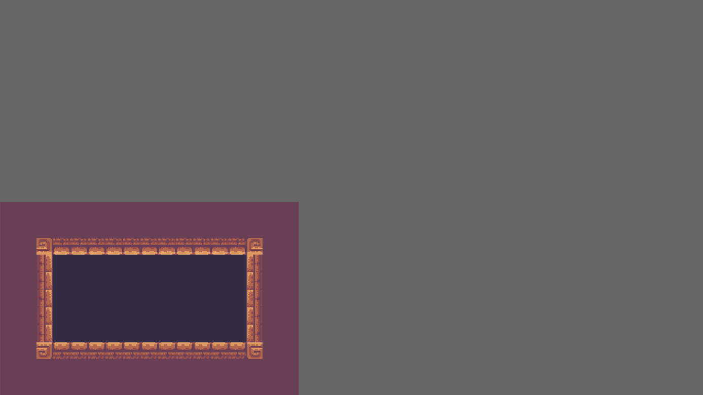
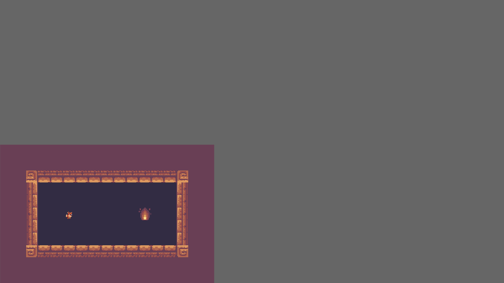

Spawn your LDtk project in Bevy
In this section, you will load/spawn your LDtk project in Bevy, including spawning sprites for the LDtk entities. This tutorial will use the LDtk project created in the previous section. You are welcome to bring your own tile-based LDtk project to this tutorial, but some of the values specified in here are specific to the previous section, such as...
- the name/location of the file (
assets/tile-based-game.ldtk) - the identifiers of the Player and Goal entities (Player, Goal)
For details about the tutorial in general, including prerequisites, please see the parent page.
Set up minimal Bevy App
In the main function of your game, create a Bevy App with DefaultPlugins and LdtkPlugin.
This code snippet also sets bevy's texture filtering to "nearest", which is good for pixelated games.
use bevy::prelude::*; use bevy_ecs_ldtk::prelude::*; fn main() { App::new() .add_plugins(DefaultPlugins.set(ImagePlugin::default_nearest())) .add_plugins(LdtkPlugin) .run(); }
Spawn the camera and LdtkWorldBundle on startup
Create a startup system that spawns a camera entity and a LdtkWorldBundle entity.
The latter requires a Handle<LdtkProject>, which can be obtained by loading your LDtk project from the Bevy AssetServer resource.
This code snippet also doubles the scale of the camera and adjusts its transform to make the level slightly easier to view in 720p.
use bevy::prelude::*; use bevy_ecs_ldtk::prelude::*; fn main() { App::new() // other App builders .add_systems(Startup, setup) .run(); } fn setup(mut commands: Commands, asset_server: Res<AssetServer>) { let mut camera = Camera2dBundle::default(); camera.projection.scale = 0.5; camera.transform.translation.x += 1280.0 / 4.0; camera.transform.translation.y += 720.0 / 4.0; commands.spawn(camera); commands.spawn(LdtkWorldBundle { ldtk_handle: asset_server.load("tile-based-game.ldtk"), ..Default::default() }); }
Finally, insert the LevelSelection resource to tell the plugin to spawn the first level.
Construct the LevelSelection using its index method to select the first level (0-indexed).
use bevy::prelude::*; use bevy_ecs_ldtk::prelude::*; fn main() { App::new() // other App builders .insert_resource(LevelSelection::index(0)) .run(); }
Now, run the game with $ cargo run --release to see your first level spawning in Bevy!

Spawn sprites for your LDtk entities
You may have noticed that the Player and Goal are not rendered here. They are there, but they require a little more work to become visible.
Create a PlayerBundle and GoalBundle, each with a SpriteSheetBundle field.
You will develop these bundles a little bit more in the next chapter, but for now they will be similar.
Derive LdtkEntity for these bundles, and give the field a #[sprite_sheet_bundle] attribute.
This trait implementation defines how these bundles should be spawned by the plugin.
More specifically - they should be spawned as sprites identical to the entity's editor visual.
#![allow(unused)] fn main() { use bevy::prelude::*; use bevy_ecs_ldtk::prelude::*; #[derive(Default, Bundle, LdtkEntity)] struct PlayerBundle { #[sprite_sheet_bundle] sprite_sheet_bundle: SpriteSheetBundle, } #[derive(Default, Bundle, LdtkEntity)] struct GoalBundle { #[sprite_sheet_bundle] sprite_sheet_bundle: SpriteSheetBundle, } }
Finally, register these bundles to the app using register_ldtk_entity, and provide their LDtk identifier.
When the plugin spawns entities with these identifiers, it will use the registered bundle.
use bevy::prelude::*; use bevy_ecs_ldtk::prelude::*; fn main() { App::new() // other App builders .register_ldtk_entity::<PlayerBundle>("Player") .register_ldtk_entity::<GoalBundle>("Goal") .run(); } #[derive(Default, Bundle, LdtkEntity)] struct PlayerBundle { #[sprite_sheet_bundle] sprite_sheet_bundle: SpriteSheetBundle, } #[derive(Default, Bundle, LdtkEntity)] struct GoalBundle { #[sprite_sheet_bundle] sprite_sheet_bundle: SpriteSheetBundle, }
Now run the game again - the sprites will appear this time.
